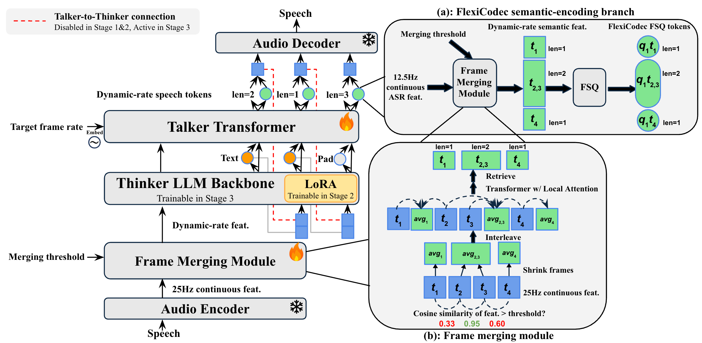

Paper submission to EMNLP
Existing spoken language models (SLMs) typically use a fixed speech-token frame rate (for example, 25 Hz or 12.5 Hz). This fixed-rate design cannot adapt to time-varying speech complexity and does not offer a direct speed-quality trade-off at inference time. We introduce FlexiSLM, the first SLM that supports dynamic and controllable frame rates on both speech input and output. A single trained model can be steered from 12.5 Hz down to 4.0 Hz without retraining.

Each card is one evaluation case. By default we show one sample per dataset; pick a specific dataset in the filter to see all of its samples.
FlexiSLM A → B means A Hz input
and B Hz output frame rates. For example, FlexiSLM 6.25 → 12.5
accepts speech encoded at 6.25 Hz and emits speech tokens at 12.5 Hz.
FlexiSLM-Data is our large-scale speech-to-speech dialogue corpus used to train FlexiSLM. This section presents curated user-assistant speech pairs to give an intuitive view of the data style and interaction quality. Each card shows the user's spoken prompt and the assistant's spoken response, together with transcript text and rough duration / audio-token statistics from the manifest.